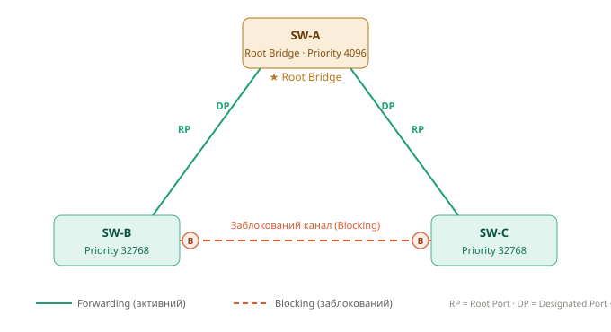
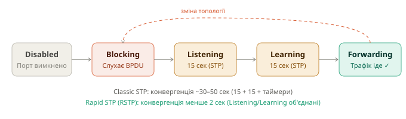

Spanning Tree Protocol — Шпаргалка
Курс: Комп'ютерні мережі | 2–3 курс
1 Що таке STP і навіщо він потрібен
У реальних мережах комутатори з'єднують резервними каналами - якщо один канал впаде, мережа продовжить працювати через інший. Але на рівні L2 це створює петлю (loop): кадр може нескінченно циркулювати між комутаторами, що швидко перевантажує мережу. Це явище називається broadcast storm
STP (Spanning Tree Protocol) вирішує цю проблему - він автоматично блокує один з резервних каналів, залишаючи лише одне активне дерево маршрутів. Якщо активний канал падає, заблокований відкривається автоматично
Без STP — петля: З STP — дерево:
SW-A ──── SW-B SW-A ──── SW-B
│ │ │
└──── SW-C ┘ SW-C (канал SW-B↔SW-C заблоковано)
↑ Кадр крутиться вічно
📁 Схема вибору маршруту:
assets/network-configs_stp_1.svg
2 Різновиди STP
| Протокол | Стандарт | Конвергенція | Особливість |
|---|---|---|---|
| STP | IEEE 802.1D | ~30–50 сек | Класичний, застарілий |
| RSTP | IEEE 802.1w | < 2 сек | Рекомендований, сумісний з STP |
| MSTP | IEEE 802.1s | < 2 сек | Кілька інстанцій для VLAN-груп |
| PVST+ | Cisco | ~30–50 сек | Окремий STP для кожного VLAN |
| Rapid PVST+ | Cisco | < 2 сек | Окремий RSTP для кожного VLAN ✅ |
Що використовувати?
На Cisco Catalyst за замовчуванням увімкнено Rapid PVST+ - окремий RSTP для кожного VLAN. Саме цей режим розглядається у прикладах нижче
2.1 Плаский STP vs Per-VLAN STP
Плаский STP (CST — Common Spanning Tree) будує одне єдине дерево для всієї мережі незалежно від кількості VLAN. Простий, але неефективний: якщо є 10 VLAN, всі вони заблокують один і той же канал
Per-VLAN STP (PVST+) запускає окремий екземпляр STP для кожного VLAN. Це дозволяє балансувати навантаження - для VLAN 10 заблокований один канал, для VLAN 20 - інший
PVST+ — балансування навантаження між VLAN:
VLAN 10: SW-A(Root)──SW-B──SW-C (канал B↔C заблоковано)
VLAN 20: SW-B(Root)──SW-A──SW-C (канал A↔C заблоковано)
Обидва канали фізично активні, але для різних VLAN
3 Як STP будує топологію
3.1 Вибір Root Bridge
Root Bridge - це "центр" дерева STP. Перемагає комутатор з меншим Bridge ID.
Bridge ID = Пріоритет (2 байти) + MAC-адреса (6 байт)
Пріоритет за замовчуванням: 32768
Крок зміни пріоритету: 4096
Можливі значення: 0, 4096, 8192, 12288, ..., 61440
При однакових пріоритетах перемагає комутатор з меншою MAC-адресою - тобто в мережі без налаштувань Root Bridge стає найстаріший комутатор. Тому завжди потрібно призначати Root Bridge вручну
3.2 Ролі портів
| Роль порту | Позначення | Опис |
|---|---|---|
| Root Port | RP | Найкращий шлях до Root Bridge. Є на кожному не-root комутаторі |
| Designated Port | DP | Найкращий порт для кожного сегменту мережі. Завжди forwarding |
| Alternate Port | AP | Резервний шлях до Root Bridge. Заблокований |
| Backup Port | BP | Резервний порт у тому ж сегменті. Заблокований |
📁 Схема топології з ролями портів:
assets/network-configs_stp_1.svg
3.3 Стани портів
📁 Діаграма переходів між станами:
assets/network-configs_stp_2.svg
| Стан | MAC-таблиця | Трафік | Час (STP) |
|---|---|---|---|
| Blocking | Не навчається | Не пропускає | max-age: 20 сек |
| Listening | Не навчається | Не пропускає | forward-delay: 15 сек |
| Learning | Навчається | Не пропускає | forward-delay: 15 сек |
| Forwarding | Навчається | Пропускає | — |
| Disabled | — | — | Адмін вимкнув порт |
RSTP прискорює конвергенцію
У RSTP стани Listening і Learning об'єднані в один, а Alternate Port переходить у Forwarding майже миттєво — без очікування таймерів
3.4 Вибір кращого шляху — Path Cost
Кожен порт має вартість (cost) залежно від швидкості. Менший cost = кращий шлях
| Швидкість | Short cost (IEEE 802.1D) | Long cost (IEEE 802.1t) |
|---|---|---|
| 10 Mbps | 100 | 2 000 000 |
| 100 Mbps | 19 | 200 000 |
| 1 Gbps | 4 | 20 000 |
| 10 Gbps | 2 | 2 000 |
| 100 Gbps | 1 | 200 |
4 Налаштування Rapid PVST+
4.1 Вмикання режиму
! Rapid PVST+ — рекомендований режим для Cisco Catalyst
spanning-tree mode rapid-pvst
! Перевірити поточний режим
show spanning-tree summary
4.2 Призначення Root Bridge
! Спосіб 1 — встановити пріоритет вручну (крок: 4096)
spanning-tree vlan 1 priority 4096 ! зробити основним Root
spanning-tree vlan 1 priority 8192 ! зробити вторинним Root
! Спосіб 2 — автоматично (рекомендовано)
spanning-tree vlan 1 root primary ! встановлює priority 24576 або менше
spanning-tree vlan 1 root secondary ! встановлює priority 28672
! Для кількох VLAN одночасно
spanning-tree vlan 1,10,20,30 root primary
spanning-tree vlan 40,50 root secondary
Root Bridge — завжди distribution/core комутатор
Ніколи не призначай Root Bridge на access-рівні (комутатор до якого підключені кінцеві пристрої). Root Bridge повинен бути distribution або core комутатором.
4.3 Пріоритет портів та вартість шляху
! Змінити пріоритет порту (менше = вищий пріоритет, крок 16)
interface GigabitEthernet1/0/1
spanning-tree port-priority 64 ! default: 128
! Змінити вартість шляху вручну
interface GigabitEthernet1/0/1
spanning-tree cost 10 ! менше = кращий шлях
! Per-VLAN вартість
interface GigabitEthernet1/0/1
spanning-tree vlan 10 cost 10
spanning-tree vlan 20 cost 50
4.4 Налаштування таймерів
! Таймери налаштовуються тільки на Root Bridge і поширюються на всю мережу
! Hello time — інтервал між BPDU (default: 2 сек, діапазон: 1–10)
spanning-tree vlan 1 hello-time 2
! Forward delay — час у станах Listening/Learning (default: 15 сек)
spanning-tree vlan 1 forward-time 15
! Max age — час до визнання Root Bridge недосяжним (default: 20 сек)
spanning-tree vlan 1 max-age 20
Обережно зі зміною таймерів
Зменшення таймерів може призвести до нестабільності мережі. Змінюй тільки якщо розумієш наслідки і тільки на Root Bridge.
4.5 Перевірка
! Загальна інформація про всі VLAN
show spanning-tree summary
! Детально по конкретному VLAN
show spanning-tree vlan 1
show spanning-tree vlan 1 detail
! Стан конкретного інтерфейсу
show spanning-tree interface GigabitEthernet1/0/1
show spanning-tree interface GigabitEthernet1/0/1 detail
! Порти в inconsistent стані (проблема)
show spanning-tree inconsistentports
! Активна топологія (зведено)
show spanning-tree vlan 1 brief
4.6 Приклад виводу show spanning-tree vlan 1
SW-A# show spanning-tree vlan 1
VLAN0001
Spanning tree enabled protocol rstp
Root ID Priority 4097
Address 0001.6C2A.1234
This bridge is the root ← цей комутатор є Root Bridge
Hello Time 2 sec Max Age 20 sec Forward Delay 15 sec
Bridge ID Priority 4097
Address 0001.6C2A.1234
Hello Time 2 sec Max Age 20 sec Forward Delay 15 sec
Interface Role Sts Cost Prio.Nbr Type
-------------------+------+---+----------+---------+---
Gi1/0/1 Desg FWD 4 128.1 P2p
Gi1/0/2 Desg FWD 4 128.2 P2p
5 Безпека STP
5.1 PortFast — швидкий перехід у Forwarding
Порти до кінцевих пристроїв (ПК, сервери) не потребують проходження через всі стани STP - вони не можуть утворити петлю. PortFast дозволяє порту миттєво перейти у Forwarding
! Увімкнути глобально для всіх access-портів
spanning-tree portfast default
! Увімкнути на конкретному порту
interface GigabitEthernet1/0/10
spanning-tree portfast
! Для trunk-порту (наприклад до сервера з тегованим трафіком)
interface GigabitEthernet1/0/10
spanning-tree portfast trunk
PortFast тільки на портах до кінцевих пристроїв
Ніколи не вмикай PortFast на портах між комутаторами - це може утворити петлю
5.2 BPDU Guard — захист від несанкціонованих комутаторів
Якщо на PortFast-порт надходить BPDU (хтось підключив комутатор), порт переходить у стан err-disabled і повністю вимикається
! Увімкнути глобально (рекомендовано разом з portfast default)
spanning-tree portfast bpduguard default
! Увімкнути на конкретному порту
interface GigabitEthernet1/0/10
spanning-tree bpduguard enable
! Автовідновлення після err-disabled (через N секунд)
errdisable recovery cause bpduguard
errdisable recovery interval 300 ! відновлення через 5 хв
! Перевірити err-disabled порти
show interfaces status err-disabled
show errdisable recovery
5.3 BPDU Filter — не надсилати і не приймати BPDU
Повністю вимикає обробку BPDU на порту. Використовується обережно - на граничних портах мережі
! Глобально (тільки на PortFast-портах — не надсилає BPDU назовні)
spanning-tree portfast bpdufilter default
! На конкретному порту (УВАГА: повністю вимикає STP на порту!)
interface GigabitEthernet1/0/10
spanning-tree bpdufilter enable
BPDU Filter небезпечний
bpdufilter enable на конкретному порту повністю вимикає STP - порт ніколи не заблокується навіть якщо утвориться петля. Використовуй тільки на стиках з провайдерами або граничних точках
5.4 Root Guard — захист Root Bridge від заміни
Забороняє порту ставати Root Port. Якщо на цьому порту надходить Superior BPDU (з меншим Bridge ID), порт переходить у стан root-inconsistent замість того, щоб переобрати Root Bridge
! Застосовується на designated-портах комутаторів distribution рівня
! (на портах що дивляться вниз до access рівня)
interface GigabitEthernet1/0/24
spanning-tree guard root
! Перевірка
show spanning-tree inconsistentports
5.5 Loop Guard — захист від петель при втраті BPDU
Якщо порт перестає отримувати BPDU (не через зміну топології, а через несправність), він може помилково перейти у Forwarding і утворити петлю. Loop Guard переводить такий порт у стан loop-inconsistent замість Forwarding
! Глобально (рекомендовано на uplink/trunk портах)
spanning-tree loopguard default
! На конкретному порту
interface GigabitEthernet1/0/1
spanning-tree guard loop
! Перевірка
show spanning-tree inconsistentports
5.6 Зведена таблиця механізмів захисту
| Механізм | Де застосовувати | Від чого захищає |
|---|---|---|
| PortFast | Access-порти (кінцеві пристрої) | Затримка конвергенції |
| BPDU Guard | Access-порти з PortFast | Підключення несанкціонованих SW |
| BPDU Filter | Граничні порти мережі | Витік BPDU назовні |
| Root Guard | Downlink-порти dist/core рівня | Зміна Root Bridge |
| Loop Guard | Uplink/trunk порти | Петлі при втраті BPDU |
6 Типова конфігурація distribution-комутатора
! Режим Rapid PVST+
spanning-tree mode rapid-pvst
! Цей комутатор — Root Bridge для VLAN 1,10,20
spanning-tree vlan 1,10,20 root primary
! Вторинний Root для VLAN 30,40 (основний на іншому SW)
spanning-tree vlan 30,40 root secondary
! PortFast + BPDU Guard глобально для access-портів
spanning-tree portfast default
spanning-tree portfast bpduguard default
! Root Guard на downlink-портах (до access рівня)
interface range GigabitEthernet1/0/1 - 20
spanning-tree guard root
! Loop Guard на uplink-портах (до core рівня)
interface range GigabitEthernet1/0/23 - 24
spanning-tree guard loop
📌 Зберегти конфігурацію:
copy running-config startup-configабоwr
Джерело
Стаття базується на офіційній документації Cisco. Оригінали (англійською): Configure STP Settings through CLI · Configuring STP — Catalyst 9200